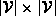

Data Structures and Algorithms
with Object-Oriented Design Patterns in Java
Data Structures and Algorithms
with Object-Oriented Design Patterns in Java
An implementation of Floyd's algorithm is shown in Program  .
The FloydsAlgorithm method takes as its argument a directed graph.
The directed graph is assumed to be an edge-weighted graph
in which the weights are instances of the
Int class defined in Program .
.
The FloydsAlgorithm method takes as its argument a directed graph.
The directed graph is assumed to be an edge-weighted graph
in which the weights are instances of the
Int class defined in Program .
The FloydsAlgorithm method returns its result in the form of an edge-weighted directed graph. Therefore, the return value is a Digraph.
The principal data structure use by the algorithm
is a  matrix of integers called distance.
All the elements of the matrix are initially set to  (lines 6-9).
Next, an edge enumeration is used to visit all the edges in the input graph
in order to transfer the weights
from the graph to the distance matrix (lines 11-18).
(lines 6-9).
Next, an edge enumeration is used to visit all the edges in the input graph
in order to transfer the weights
from the graph to the distance matrix (lines 11-18).
The main work of the algorithm is done in three, nested loops (lines 20-29).
The outer loop computes the sequence of distance matrices
.
The inner two loops consider all possible pairs of vertices.
Notice that as  is computed, its entries overwrite those of
is computed, its entries overwrite those of  .
.
Finally, the values in the distance matrix are transfered to the result graph (lines 31-38). The result graph contains the same set of vertices as the input graph. For each finite entry in the distance matrix, a weighted edge is added to the result graph.
 Copyright © 1998 by Bruno R. Preiss, P.Eng. All rights reserved.
Copyright © 1998 by Bruno R. Preiss, P.Eng. All rights reserved.